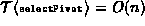

Data Structures and Algorithms
with Object-Oriented Design Patterns in Java
Data Structures and Algorithms
with Object-Oriented Design Patterns in Java
The analysis in the preceding section shows
that selecting a good pivot is important.
If we do a bad job of choosing the pivot,
the running time of quicksort is  .
On the other hand,
the average-case analysis shows that if every element
of a sequence is equally likely to be chosen for the pivot,
the running time is
.
On the other hand,
the average-case analysis shows that if every element
of a sequence is equally likely to be chosen for the pivot,
the running time is  .
This suggests that we can expect to get good performance
simply by selecting a random pivot!
.
This suggests that we can expect to get good performance
simply by selecting a random pivot!
If we expect to be sorting random input sequences,
then we can achieve random pivot selection simply by
always choosing, say,
the first element of the sequence to be the pivot.
Clearly this can be done in constant time.
(Remember, the analysis requires that ).
As long as each element in the sequence is equally likely to
appear in the first position,
the average running time will be  .
.
In practice it is often the case that the sequence to be sorted is almost sorted. In particular, consider what happens if the sequence to be sorted using quicksort is already sorted. If we always choose the first element as the pivot, then we are guaranteed to have the worst-case running time! This is also true if we always pick the last element of the sequence. And it is also true if the sequence is initially sorted in reverse.
Therefore, we need to be more careful when choosing the pivot. Ideally, the pivot divides the input sequence exactly in two. That is, the ideal pivot is the median element of the sequence. This suggests that the selectPivot method should find the median. To ensure that the running time analysis is valid, we need to find the median in O(n) time.
How do you find the median?
One way is to sort the sequence
and then select the  element.
But this is not possible,
because we need to find the median to sort the sequence in the first place!
element.
But this is not possible,
because we need to find the median to sort the sequence in the first place!
While it is possible to find the median of a sequence of n elements in O(n) time, it is usually not necessary to do so. All that we really need to do is select a random element of the sequence while avoiding the problems described above.
A common way to do this is the median-of-three pivot selection technique. In this approach, we choose as the pivot the median of the element at the left end of the sequence, the element at the right end of the sequence, and the element in the middle of the sequence. Clearly, this does the right thing if the input sequence is initially sorted (either in forward or reverse order).
Program  defines
the MedianOfThreeQuickSorter class
The MedianOfThreeQuickSorter class
extends the abstract AbstractQuickSorter class
introduced in Program .
It provides an implementation for the selectPivot method
based on median-of-three pivot selection.
Notice that this algorithm does exactly three comparisons
to select the pivot.
As a result, its running time is O(1).
In practice this scheme performs sufficiently well
that more complicated pivot selection approaches are unnecessary.
defines
the MedianOfThreeQuickSorter class
The MedianOfThreeQuickSorter class
extends the abstract AbstractQuickSorter class
introduced in Program .
It provides an implementation for the selectPivot method
based on median-of-three pivot selection.
Notice that this algorithm does exactly three comparisons
to select the pivot.
As a result, its running time is O(1).
In practice this scheme performs sufficiently well
that more complicated pivot selection approaches are unnecessary.
Program: MedianOfThreeQuickSorter class selectPivot method.
 Copyright © 1998 by Bruno R. Preiss, P.Eng. All rights reserved.
Copyright © 1998 by Bruno R. Preiss, P.Eng. All rights reserved.